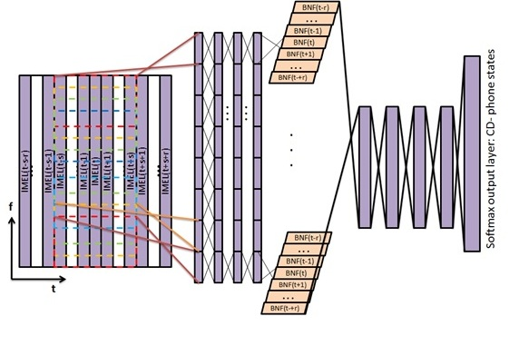
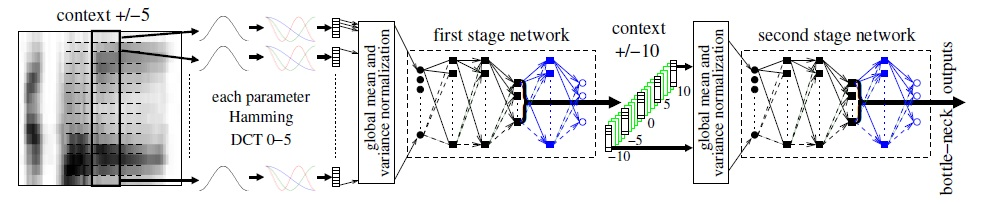
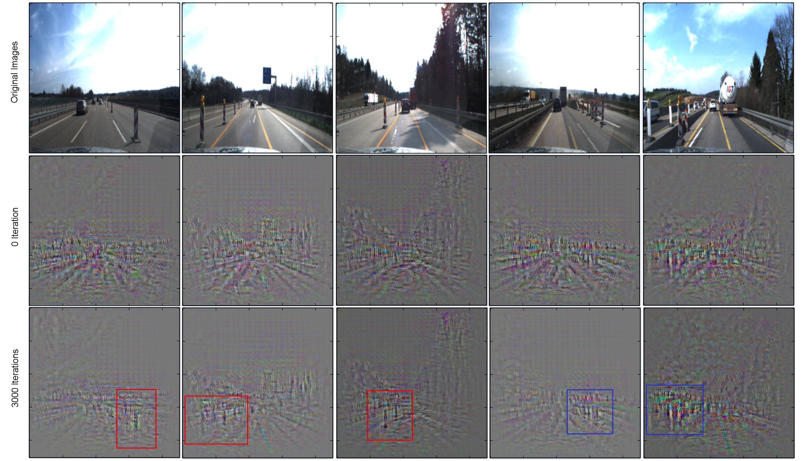
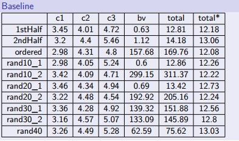
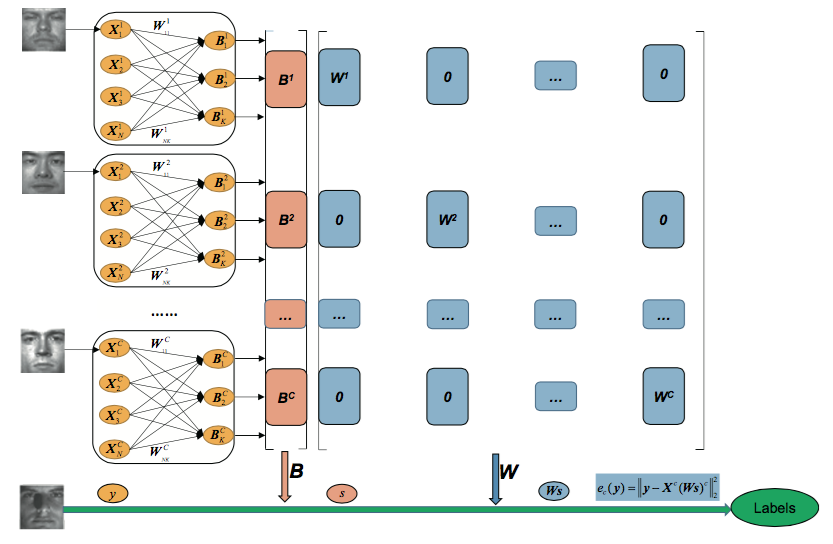
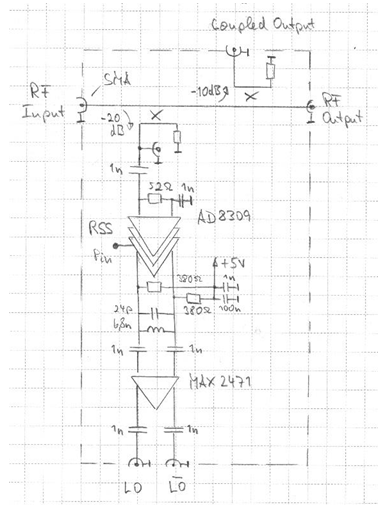
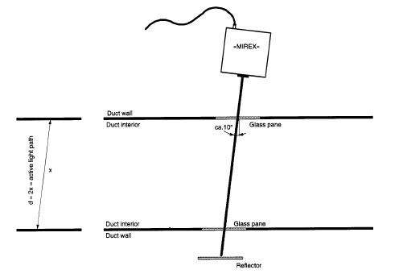

Cognitive System, Speech Recognition, Computer Vision
Human-Computer Interaction, Multimedia, Computer Graphics
Machine Learning, Data Mining, Deep Learning
Modular Deep Neural Networks (mDNN) with Improved Bottleneck Features and Residual Learning for Speech Recognition

We are developing a speech recognition system based on modular DNN for acoustic models (mDNN-AM), which consists of a bottleneck features (BNF) module as features and a DNN module as classifiers. We are Evaluating the speech recognition system on the large-scale IWSLT 2014 benchmark.
We developed a modified BNF module, which reduces both temporal and spectral variations widely existing in speech signals:
1) We combined 9 frequency-shift-invariant windows with the IMEL features as inputs to the BNF module.
2) We reduced 5% word error rate (WER) compared with the baseline mDNN-AM.We developed a modified BNF module, which reduces both temporal and spectral variations widely existing in speech signalsa modified DNN module by using a residual learning framework to facilitate the training of the network with increased depth and achieve much lower WER:
1) We introduced skip connections between certain DNN hidden layers.
2) We evaluated variants of skip connection structures and reduced 3% WER.We proposed additional modifications for further variation reduction and performance improvement:
1) We introduced a second BNF module to reduce the dimension of the stacked BNF layers and decrease WER.
2) We replaced the modified BNF with a time delay/convolutional layer to evaluate the function of shift windows.
Multilingual Bottleneck Features for Language Recognition

We surveyed the research on multilingual bottleneck features for language recognition, including architectures, properties, optimization and variants, especially focusing on their generalization and applicability to different data statistics. We implemented different neural network architectures such as combining two cascades of stacked bottleneck neural networks with multilingual bottleneck network. We evaluated and compared these networks on several benchmark datasets, such as NIST LRE 2009 and OGI multilingual, and determined which architecture is most suitable for the relevant dataset.
Deep Convolutional Neural Networks for Roadwork and Crosswalk Recognition in Traffic Scenes
[Report]

We developed recognition systems that detected roadworks and crosswalks using the state-of-the-art deep convolutional neural networks (CNNs) to facilitate self-driving cars. We first implemented the systems by combining off-the-shelf CNN features (including ImageNet-CNN, Places-CNN and Hybrid-CNN) and different classifiers (such as SVM and logistic regression), which achieved 85% recognition accuracy and significantly outperformed those using handcrafted features (such as HOG and LBP).
We then introduced a multi-stage training procedure by first fine-tuning on a large-scale auxiliary dataset then fine-tuning on the small-scale target dataset (the FZI and SUN benchmarks), which significantly improved the recognition performance. In addition, we performed an ablation study, and visualized features using the deconvolutional networks to compare the features learned by both pre-trained and fine-tuned CNNs.
Big Data Analytics

We developed a model that effectively predicted the impact of personalized coupons on ordering behavior, i.e., the redeemed coupons and the shopping basket value for new orders, by analyzing the historical order data from an online shop with accompanying coupon generation. We implemented the feature pre-processing module that dealt with time related features with missing elements. We implemented the classification and regression module, and systematically evaluated various related approaches, such as decision tree, neural networks, SVM, KNN, AdaBoost, linear regression and polynomial regression. We used tools including R, SPSS and KNIME.
Face Recognition based on Sparse Representation

We proposed a novel approach to class specific dictionary learning that considered the weight of each sample when generating dictionary for sparse/collaborative representation, which increased the face recognition rate by 2% to 6%. We generalized to class specific centralized/discriminant dictionary learning that guaranteed the concentration of sparse codes within the same class, which further improved the face recognition rate by 2% to 4%. We then extended the approaches from Euclidean space to reproducing kernel Hilbert spaces that captured and combined various nonlinear structures, leading to superior performance in face recognition and image classification compared with conventional classification algorithms.
LO Signal Generation Circuit for Power Amplifier in a 7 Tesla MRI System

We developed an LO signal generation circuit for a 7 Tesla MRI power amplifier in the Larmor frequency. We designed the circuit based on directional couplers, limiting amplifiers, resonant filters and buffer amplifier. We conducted a series of experiments to test the circuit, and used the measured data to rectify the circuit, especially to redesign the resonant filter to work in the desired frequency.
Simulation of a New Aerosol Source for the Test of Smoke Detectors in False Alarm Scenarios

We developed a simulation system that used airbrushes to effectively generate a new aerosol source for testing the performance of smoke detectors in false alarm scenarios in public space. We built the simulation model (hardware), and controlled the relevant parameters (e.g., pressure, duty cycle and fan speed) to generate the desired aerosol source. The simulated source was successfully used to evaluate smoke detectors to decrease the chance of false alarms.
Softswitch Programming
I interned at Guangzhou Guangha Communication Company Limited (GHT Co., Ltd.) in summer 2011 and 2012, participating as a team member in developing and testing softswitch for communication in rail systems. After familiar with the key techniques in softswitch and stored program control switching systems, I learned the corresponding hardware and software developed by the company in the dispatching console of softswitch.
We improved the software in the touch screen of the dispatching console, making the entire system more efficient by increasing 5% of the interface sensitivity. The software was successfully used in high-speed rail systems due to its small size, portability and sensitivity. I was also involved in the technical support for troubleshooting of the softswitch control device.
Future
During the research, I have got a deeper understanding in data science and cognitive system. Many individual tasks such as speech recognition and object recognition can be integrated, for example via deep neural networks, for better performances. I have made some attempts in this direction and I hope to move forward by incorporating different concepts, approaches, tasks and disciplines to boost high-level perception and data processing ability of computers.
Besides, I have realized in my experiments that variations from multiple sources are the curse of data science and cognitive system. I wish to find effective framework to analyze separately the multiple factors.
From these experiences, I have learned that the devil is in the detail and how engineering depends on doing patient experiments and making concrete analyses. I enjoy thinking and discovering practical solutions to real-world problems. I love that self-satisfying flash moment when you glimpse something never seen before, never known by others.